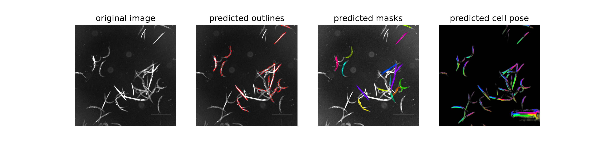

Scellseg single-worm analysis workflow
Purpose and scope
This workflow describes the conversion of whole-well w1 fluorescence images
into segmented worm instances, individual-worm crops, and ImageJ-style
measurement tables. It is limited to the screening-image work package;
presentation composites and statistical plotting files are not inputs.
The archived directory layout establishes the processing stages and output counts. It does not establish the exact project model weights, segmentation parameters, manual corrections, 8-bit conversion rule, or ImageJ macro. These items remain explicit unknowns.
Analytical role
The plate acquisitions contain two reporter channels, but the verified
Scellseg query and instance directories use w1 only. In the image archive,
w1 is assigned to FITC/GFP and w2 to DAPI/Violet. Segmentation therefore
defines worm instances from w1; the available instance outputs alone cannot
reconstruct a paired YFP500/YFP420 measurement.
Inputs
| Input | Observed specification |
|---|---|
| Query images | 702 TIFF files across eight batches |
| Channel | w1, FITC/GFP |
| Image size | 2007 × 2007 pixels |
| Bit depth | 16-bit |
| Naming | *_w1_img.tif |
| Metadata source | metadata/metadata.xlsx, images sheet |
The query directories appear to contain processing copies of raw w1 files.
One checked pair was byte-identical, but all pairs should be checksum-verified
before deduplication.
Workflow overview
flowchart TD
A["Raw whole-well w1 TIFF"] --> B["Query manifest and eight query batches"]
B --> C["Scellseg instance segmentation"]
C --> D["Instance mask PNG"]
C --> E["Segmentation preview PNG"]
C --> F["Segmentation NPY and outline TXT"]
C --> G["16-bit 512 × 512 individual-worm TIFF"]
G --> H["8-bit 512 × 512 TIFF"]
H --> I["ImageJ-style Results.xls"]
Processing stages
1. Query preparation
Select w1 TIFF rows from the filename channel token that belong to a raw-data
path, are not already inside the single-worm tree, and contain plate and well
identifiers. Preserve plate assignment in query-1 through query-8.
The packaged preparation script defaults to manifest mode, which records the
mapping without copying data. copy and symlink modes are available when a
separate processing tree is required.
2. Instance segmentation
Scellseg creates a labelled mask and preview for each query image. The observed file conventions are:
| Artifact | Files | Observed role |
|---|---|---|
*_cp_masks.png |
702 | 2007 × 2007 instance-mask image |
*_cp_output.png |
702 | 3600 × 900 segmentation preview |
*_seg.npy |
702 | segmentation array |
*_cp_outlines.txt |
702 | instance outlines |
The project model weights are currently missing and need to be obtained from the algorithm owner. The upstream documentation's generic weights and default thresholds must not be presented as the settings used for these images.
Representative segmentation output
The following archived preview shows one representative whole-well result. From left to right, the panels contain the input fluorescence image, predicted instance outlines, colour-coded predicted masks, and the predicted cell-pose field. The preview is displayed as supplied and is not a newly generated analysis result.

The corresponding processing tree also contains one TIFF crop for each retained instance. The example below is an 8-bit display derivative for one predicted worm. It was converted from the archived TIFF to PNG only for browser display; the spatial content was not altered.
3. Individual-worm extraction
The eight single-* directories contain 4,878 instance-labelled, 16-bit TIFF
files at 512 × 512 pixels. No confirmed command describes crop centring,
padding, edge handling, or instance exclusion. Preserve these files as the
intensity-retaining derivative.
4. 8-bit conversion and measurement
The eight output-* directories contain 4,878 corresponding 8-bit TIFF files
at 512 × 512 pixels. A sampled single/output pair was not byte-identical.
Each output directory also contains a tab-delimited text file named
Results.xls, with fields including Area, Mean, Min, Max, IntDen,
RawIntDen, MinThr, and MaxThr.
The ImageJ version, macro, threshold settings, and 16-to-8-bit conversion rule must be recovered before quantitative measurements are exactly reproducible.
Packaged software
The scellseg_analysis/ directory contains:
- Scellseg source code, GUI assets, examples, and upstream licence files;
- the exact upstream source revision recorded in
SOURCE_VERSION.txt; - a configuration template that retains unknown values as
null; - scripts for query-manifest generation, GUI launch, and output auditing; and
- Conda and pip environment definitions.
The abbreviated commit 84fe158… is a Git source-version identifier. It makes
the packaged source snapshot unambiguous if the online repository later
changes; it is not evidence that the same revision was used in the original
analysis. Model-weight binaries are not included and are marked as pending.
Setup
cd scellseg_analysis
conda env create -f environment.yml
conda activate celegans-scellseg
The environment follows the upstream Python 3.7.4 reference line. GPU and CUDA versions should be adapted to the execution host; they are unknown for the original run.
Commands
Create and inspect a query mapping without copying images:
python scripts/prepare_query_inputs.py \
--metadata ../metadata/metadata.xlsx \
--dataset-root /path/to/C_elegans_ROS_Dataset \
--output-root /path/to/scellseg_work \
--mode manifest
After reviewing the manifest, use copy or symlink mode if the query tree
should be materialized. Existing destinations are not replaced unless
--overwrite is supplied.
After the confirmed model weights and parameters are added, launch the GUI:
bash scripts/run_scellseg_gui.sh
Running with an arbitrary upstream model is a new analysis, not a reproduction of the archived output.
Audit an existing processing tree:
python scripts/audit_scellseg_outputs.py \
--root /path/to/single_worm_data_7.8 \
--json-out scellseg_output_audit.json
Expected output inventory
| Processing image group | Images |
|---|---|
| Query TIFF inputs | 702 |
| Mask PNGs | 702 |
| Preview PNGs | 702 |
single-* 16-bit TIFFs |
4,878 |
output-* 8-bit TIFFs |
4,878 |
| TIFF and PNG total | 11,862 |
The supplied descriptive count is 4,886 isolated worms, while both instance directories contain 4,878 TIFFs. The eight-instance difference must be resolved against the original processing log; the audit script reports filesystem counts without silently correcting them.
Quality control
- Review masks and previews for merged worms, fragments, debris, empty instances, and edge truncation.
- Retain the link from plate and well to query image, mask, preview, and numbered instance crop.
- Verify query/raw pairs by checksum before eliminating processing copies.
- Keep 16-bit and 8-bit derivatives as distinct processing stages.
- Do not infer
w2measurements or a paired-channel ratio fromw1-only instance images. - Record exclusions and manual corrections at instance level.
Reproducibility gaps
Exact end-to-end reproduction still requires:
- the project model weights and whether they were pretrained or fine-tuned;
- the Scellseg version actually used;
- cell diameter, model-match threshold, cell-probability threshold, channel settings, device, and batch parameters;
- fine-tuning images, masks, data split, and training settings, if applicable;
- crop-generation and instance-exclusion rules;
- the 8-bit conversion rule; and
- the ImageJ version, macro, thresholds, measurements, and QC rules.
These unknowns are represented as null or unknown in
configs/scellseg_workflow_config.yaml so later confirmations can be added
without rewriting the workflow.
Citation and licence
Use of software-derived images should cite both the dataset and Scellseg:
Xun D, Chen D, Zhou Y, Lauschke VM, Wang R, Wang Y. Scellseg: a style-aware deep learning tool for adaptive cell instance segmentation by contrastive fine-tuning. iScience. 2022;25:105506. https://doi.org/10.1016/j.isci.2022.105506
See scellseg_analysis/THIRD_PARTY_NOTICES.md and the upstream licence files
before redistribution.